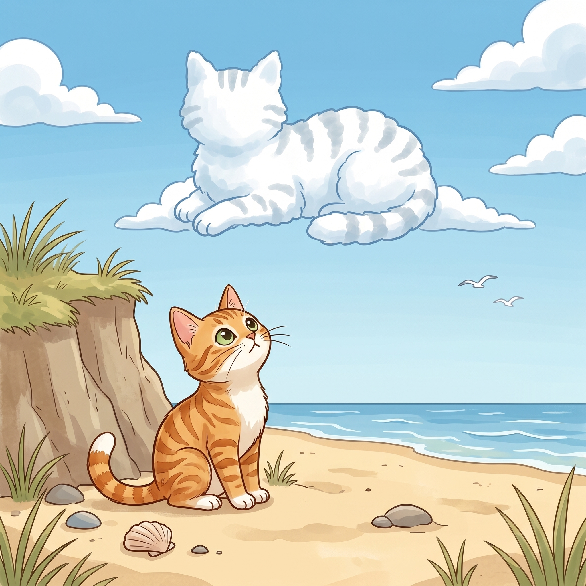

Step 1 · Say the Blend
cl
c and l slide together, like cloud.
cloud
clear
close
Read cl words. Then read one tiny story.

c and l slide together, like cloud.
Beach Cat sat by a cliff.
A cloud went by.
The sky was clear.
The cloud came close.
Beach Cat looked up.
The cloud looked like a cat.
You read cl words like cloud, clear, cliff, and close.
You used a blend in a quiet sky story.
If it still feels fun, read the story one more time.